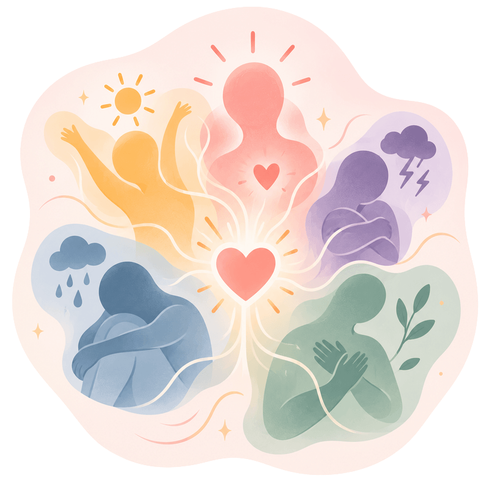

1Nervous system regulation
Restore safety in your body
In plain termswe teach your body that the danger has passed.
Your nervous system holds the memory of your trauma. Through polyvagal-informed therapy and somatic experiencing, we'll help your body finally recognize that the threat is over. You'll learn to regulate your emotions, calm your stress response, and feel grounded in your own skin.
